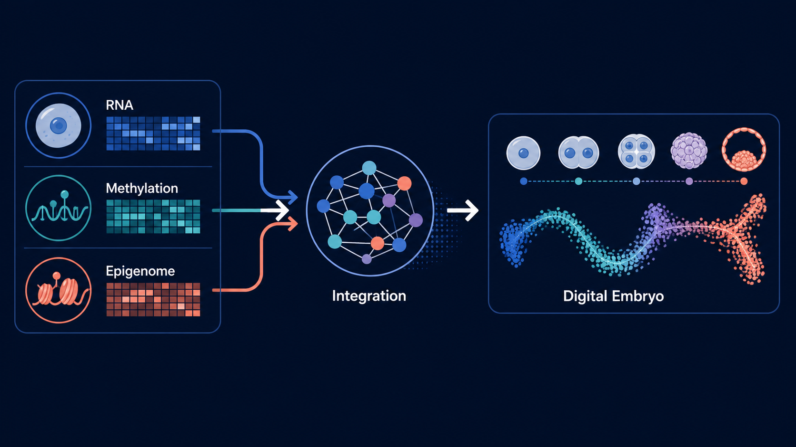
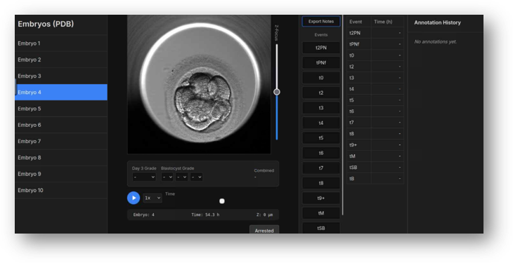

The Digital Embryo
The lab's central program is a multi-omic atlas and predictive model of human preimplantation development, spanning zygote to blastocyst. The project integrates public and newly generated single-cell datasets to identify molecular trajectories, divergence points, and regulatory programs linked to embryo competence and arrest.
Student projects are designed as modular contributions to this shared backbone: transcriptome harmonization, methylation integration, allelic and variant analysis, RNA velocity, time-lapse morphokinetics, and wet-lab validation.
Integrated Multi-Omic Atlas of Human Preimplantation Development
Matthew Shen, Jaylan Tran, Dominick Mueller, Arwa Sheheryar, Arsh Verma, Eitan Lenga
This program builds the core Digital Embryo atlas by reprocessing embryo datasets through standardized pipelines, harmonizing metadata, integrating modalities, and comparing normal developmental trajectories against embryo arrest. The goal is to create a durable computational reference that supports downstream prediction, hypothesis generation, and wet-lab validation.
Russell SJ, Zhao C et al. An atlas of small non-coding RNAs in human preimplantation development. Nature Communications, 2024.

Wet-Lab Multi-Omic Profiling of Human Embryos
Sanaa Ebrahim
This project establishes wet-lab workflows for single-cell and multi-omic profiling of human preimplantation embryos through the CReATe collaboration. The work links sequencing protocol development with the computational atlas so newly generated samples can directly test predictions from the Digital Embryo.

Methylation and Cross-Modal Integration
Dominick Mueller
This project integrates DNA methylation, transcriptomic, and epigenomic features into a shared model of early development. The immediate focus is to build interpretable cross-modal workflows that let methylation dynamics inform embryo trajectory inference and regulatory architecture.

Transcriptional Arrest Status Across the Digital Embryo
Arwa Sheheryar, with Jaylan Tran
This project adapts transcriptional arrest status scoring to archival embryo datasets where parental genomes are unavailable. By projecting arrest-related signatures across the atlas, the work tests whether maternal-to-zygotic transition failure can be detected before, during, and after visible developmental arrest.

Transposable Elements and Alternative Splicing in Embryo Arrest
Arsh Verma
This project quantifies transposable element activity and alternative splicing across developing and arrested embryos. The work asks whether TE families, loci, or splice events mark specific developmental windows or failure modes within the Digital Embryo atlas.

Time-Lapse Imaging and Embryo Morphokinetics
Deeksha Kumar
This project analyzes embryo time-lapse imaging data to connect morphokinetic behavior with developmental potential. The work supports the imaging arm of the Digital Embryo by transforming visual development into quantitative features that can be integrated with molecular data.

Genetic Variant and Allelic Analysis Backbone
Jaylan Tran
This project builds the variant-calling and allelic-analysis layer needed to support embryo-level comparisons across datasets. The work provides a foundation for ancestry-aware quality control, genetic feature annotation, and arrest-related allelic hypotheses.

RNA Velocity and Developmental Directionality
Eitan Lenga
This project uses RNA velocity to infer developmental directionality from spliced and unspliced transcript counts. By comparing typical trajectories with arrested embryos, the work identifies where transcriptional progression begins to diverge.